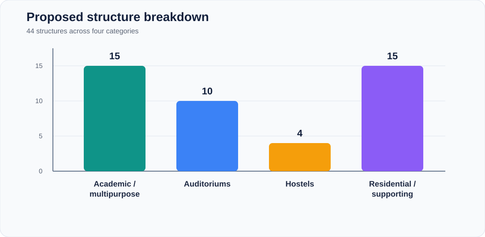
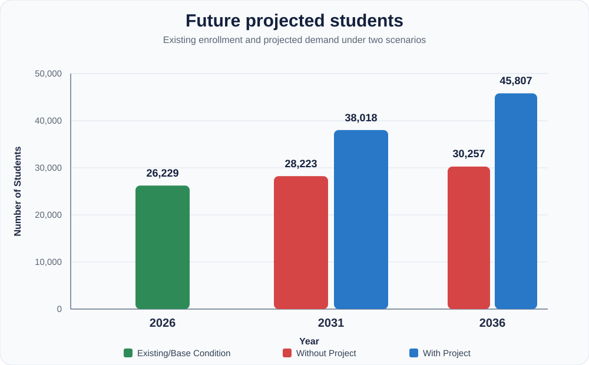
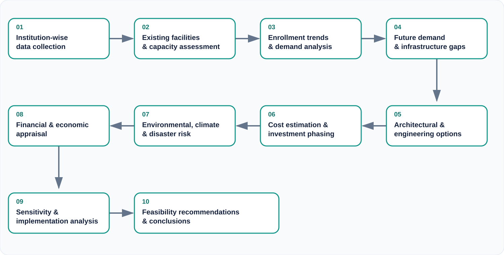
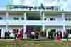
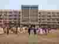
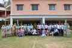
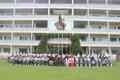

Public summary · v1.0 · September 2026
Feasibility Study for Infrastructure Development of Selected Military and Cantonment Educational Institutions
An overview of a completed feasibility study covering 13 institutions across 11 districts of Bangladesh, prepared by Atlas Engineering Solution (AES) for the Secondary and Higher Education Division, Ministry of Education.
13institutions, 11 districts
44proposed structures
26,229existing students
+19,578proposed capacity
160,112 m²additional built-up area
~Tk. 950 crestimated investment
Where

Headline charts


Approach

The institutions




About this page. This is a public summary only. The full report, drawings, cost estimates, survey data and appendices are not published and are available on request, at the client's discretion, possibly under NDA. Figures are rounded for public presentation.
Download the one-page PDF summary · View the repository
Download the one-page PDF summary · View the repository